Tim Reinhardt, 31. August 2022.
Joint work with Jürgen Richter-Gebert and Aaron Montag.
Real-Time
Computation of Simple
Conformal Maps
Matrix × Imaginary 2022
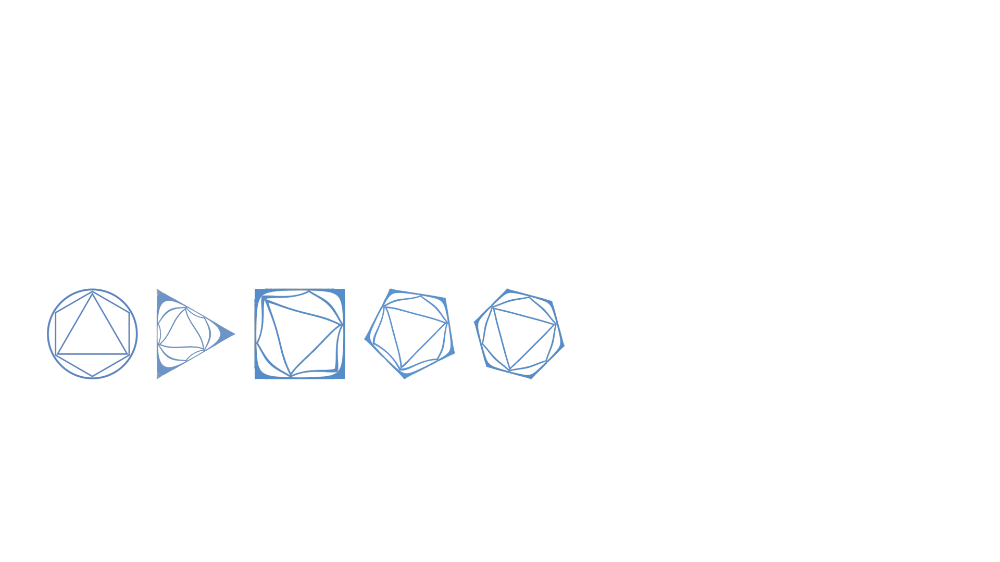
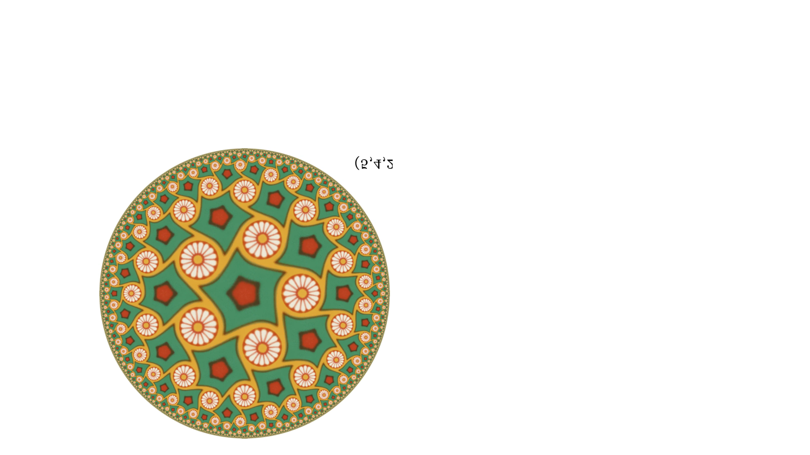
Motivation
Hyperbolic symmetry groups.
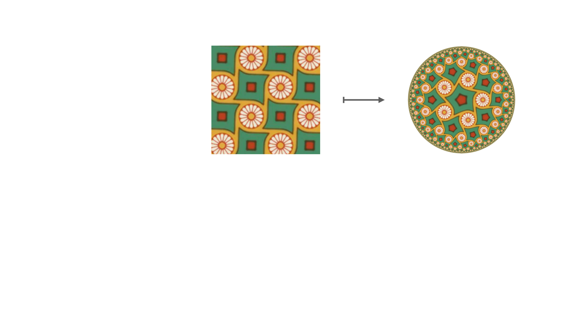
Key question. How to transform fundamental cells of symmetry?
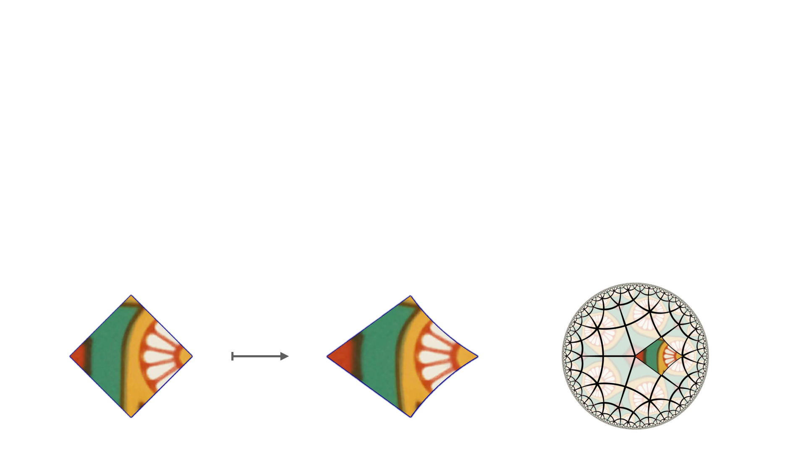
conformal
Motivation
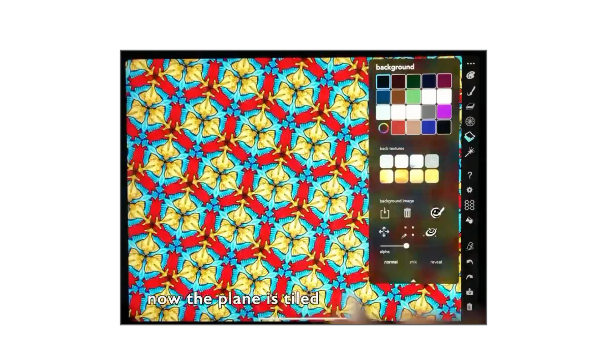
Why Conformal?
A transformation
infinitesimal figures only
rotated and scaled
not conformal
not conformal
conformal
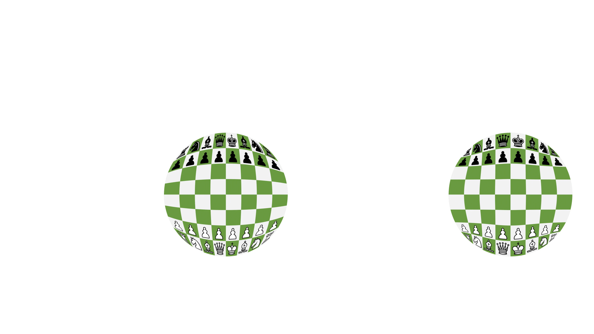
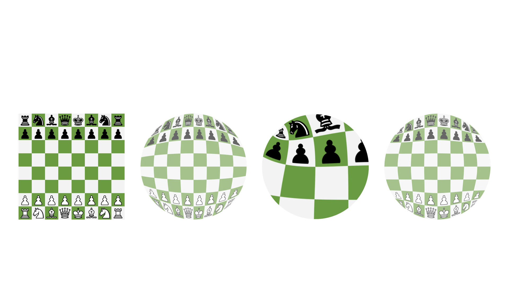
Why Conformal?
A transformation
infinitesimal figures only
rotated and scaled
not conformal
not conformal
conformal
How to Compute Conformal Maps?
Riemann Mapping Theorem.
Every simply connected region
Only existence statement.
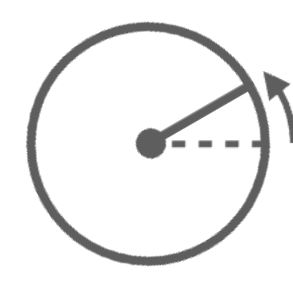
How to Compute Conformal Maps?
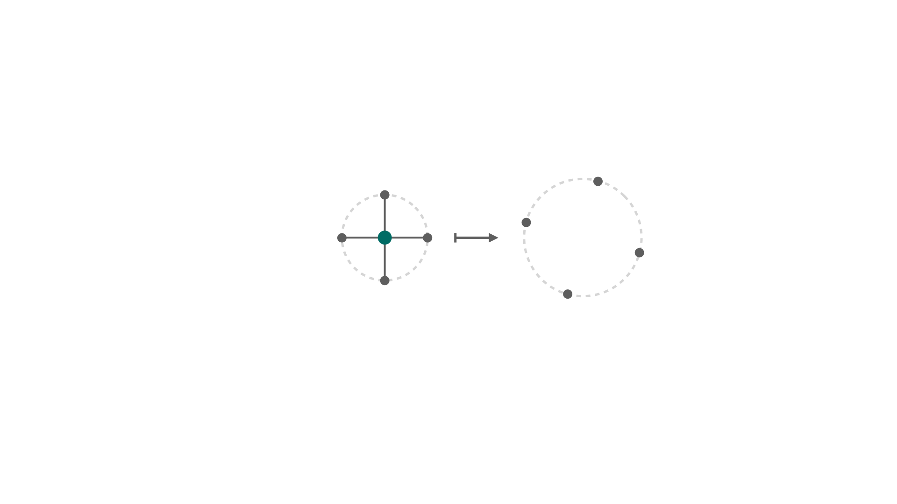
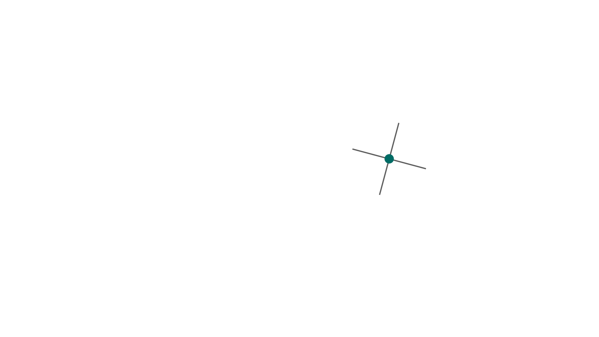
Necessary condition.
Each image point is approximately
the arithmetic mean of the images
of close neighbors.
Idea for algorithm.
•
Initialize with reasonable mapping.
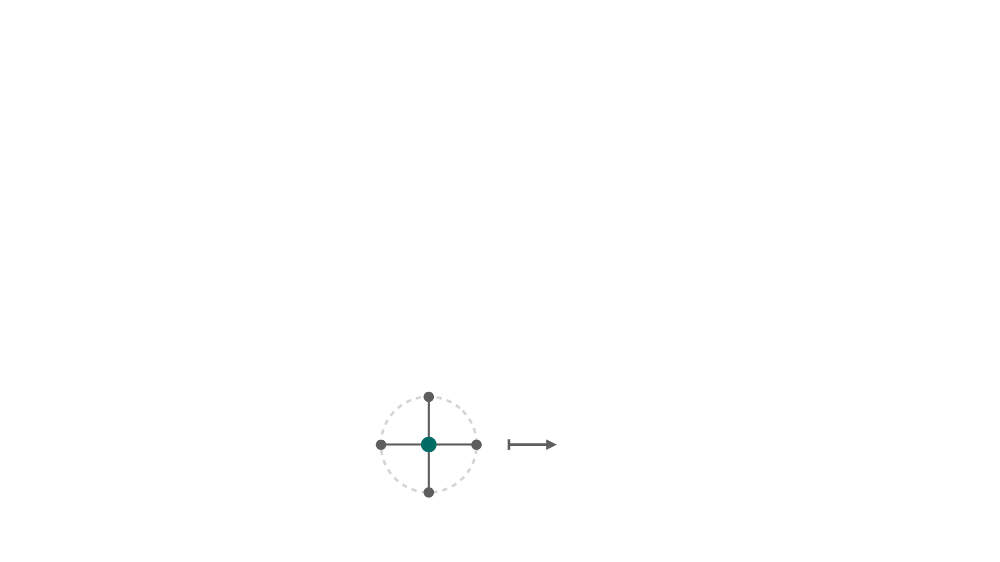
GPU
Idea. Conformal maps are infinitesimal scale-rotations.
•
“Force” the mapping to fulfill the
arithmetic mean property.
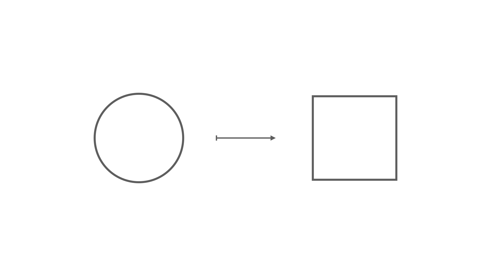
How to Deal with Boundaries?
How to Deal with Boundaries?
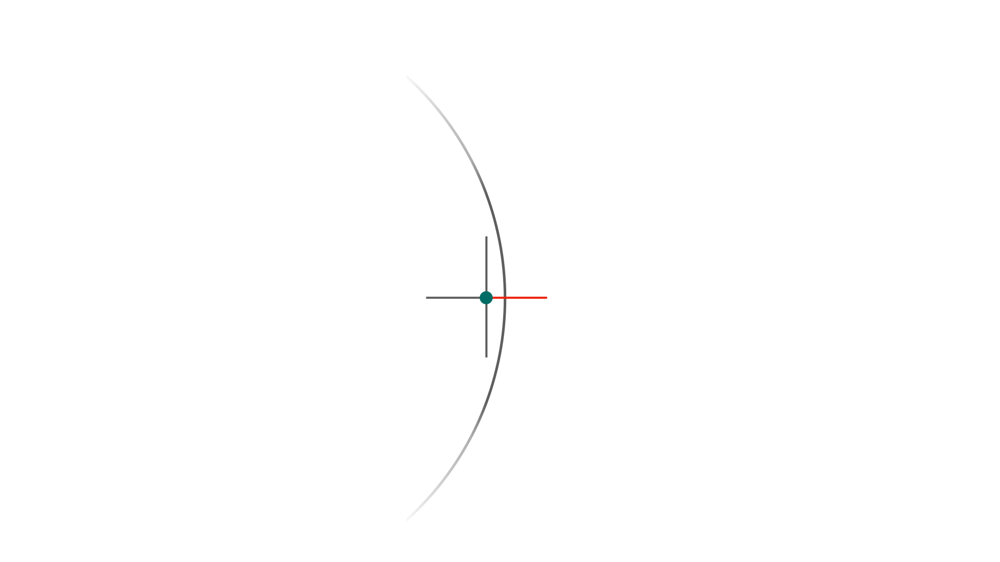
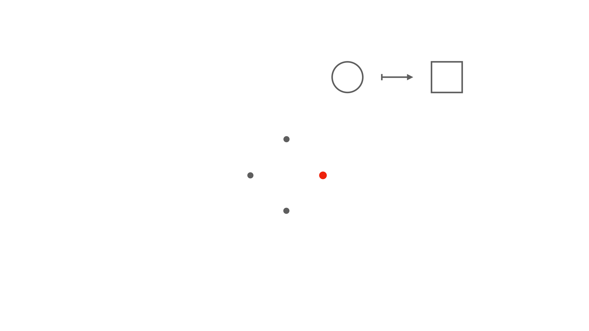
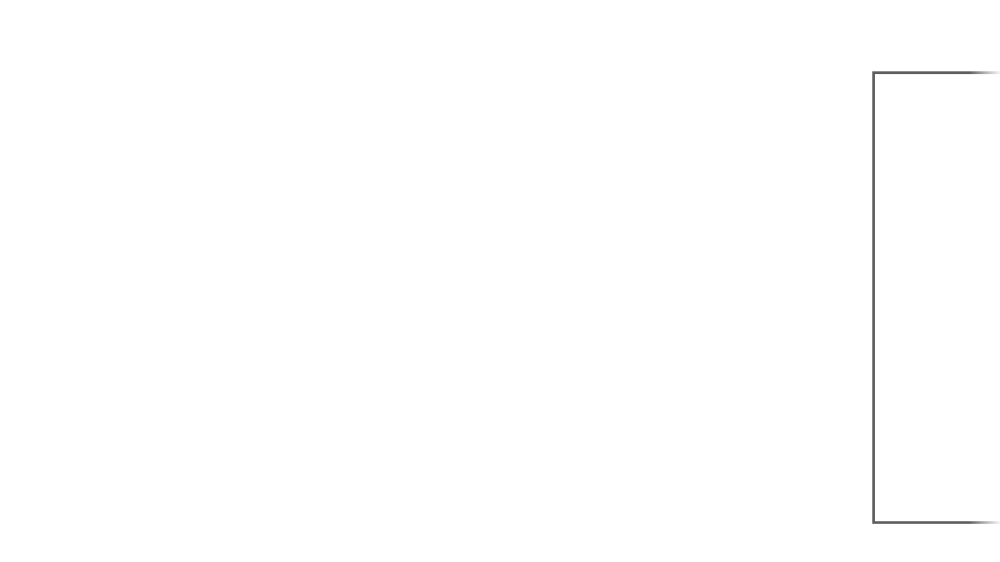
How to Deal with Boundaries?
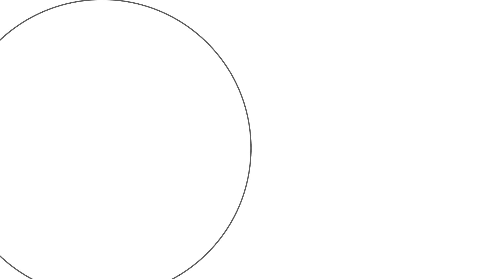
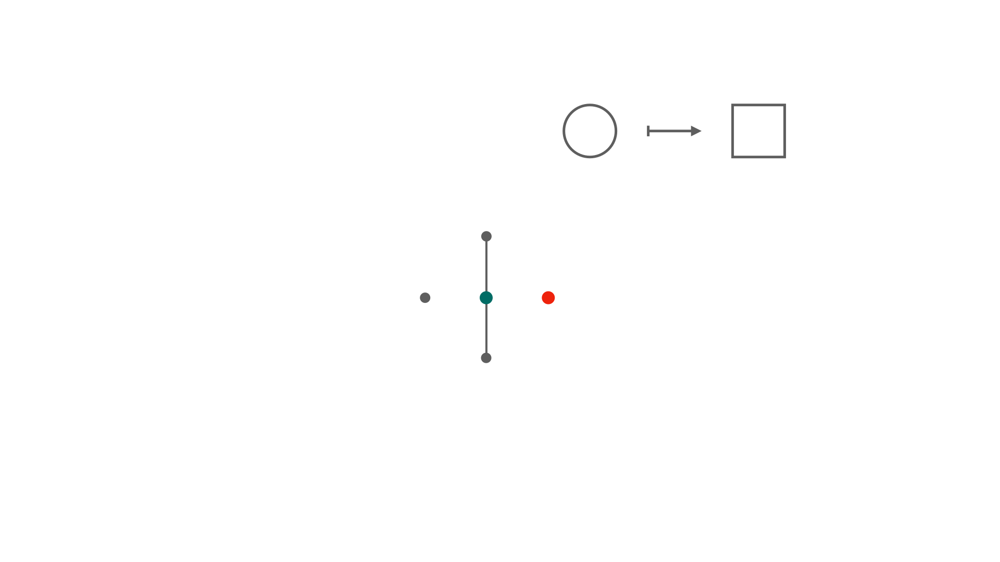


How to Deal with Boundaries?
•
Analytical continuation
via Schwarz Reflection
Principle.
•
Restrict to regions
bounded by straight-line
and circular segments.
Demo
Advantages.
•
Map “floats” to conformal state.
•
Smooth adaption to change of target shape.
•
Applications beyond hyperbolic symmetry groups.
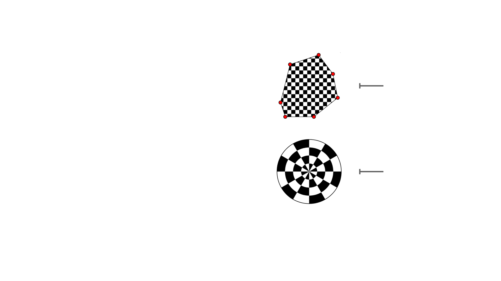
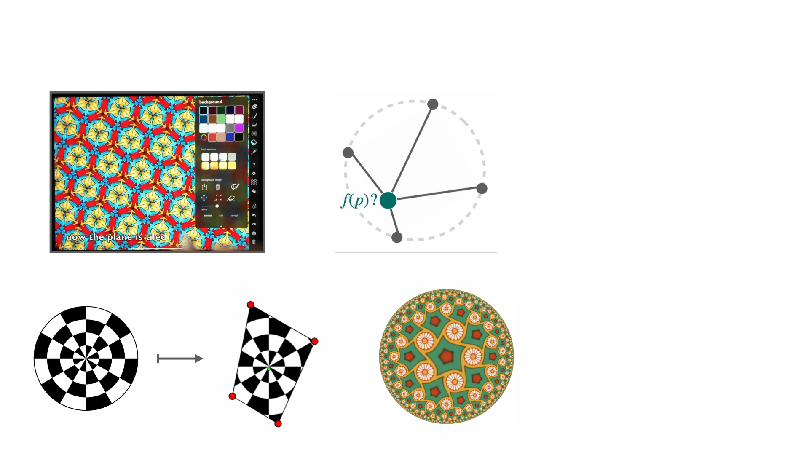
Conformal Maps in Real Time